「作業員」→
「マネージャー」へ。
時代は 「プロンプト・エンジニアリング」から 「組織エンジニアリング」へ。Codex を単体の「作業員」ではなく、複数の AI を束ねる 自律的なマネージャーへ進化させる鍵は、3 つの GitHub プロジェクトの統合にある。

もう、命令はしない。
「組織」を設計する。
これまでの開発は、1 つの AI に上手な指示を出す 「プロンプト・エンジニアリング」だった。だが Codex の真価は、AI Worker・AI Reviewer・AI Tester といった役割を組み合わせ、「AI チーム」として運用する段階で解き放たれる。人間の仕事は、命令から 組織設計へと移る。
単一の AI がどれほど賢くても、1 人で完遂できるタスクには限界がある。実装・レビュー・テストを別々のエージェントに分担させ、互いに成果を渡し合う——この 分業こそが、開発速度を非連続に引き上げる。
Codex は、その分業を成立させる「ランタイム」になる。あなたが書くのは細かな手順ではなく、「誰が・何を・どの順で」という組織の設計図だ。プロンプトの巧拙ではなく、役割設計の巧拙が成果を決める。
この転換を支えるのが、本日紹介する 3 つの GitHub プロジェクト。それぞれが OS・アプリ・司令塔という明確なレイヤーを担う。
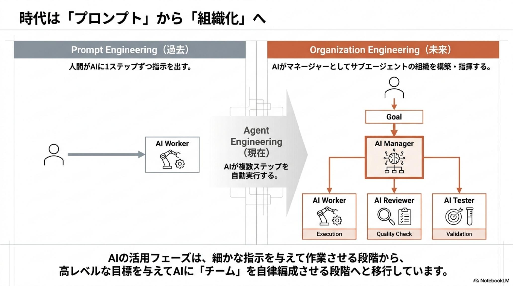
AI の能力を拡張する、
新しい「部品」。
Skill は、AI エージェントの能力を後から差し込む 新しいソフトウェア部品だ。モデルそのものを訓練し直さずとも、ツール・手順・知識を「スキル」として与えれば、エージェントは新しい仕事をこなせるようになる。能力は、こう定義し直される——
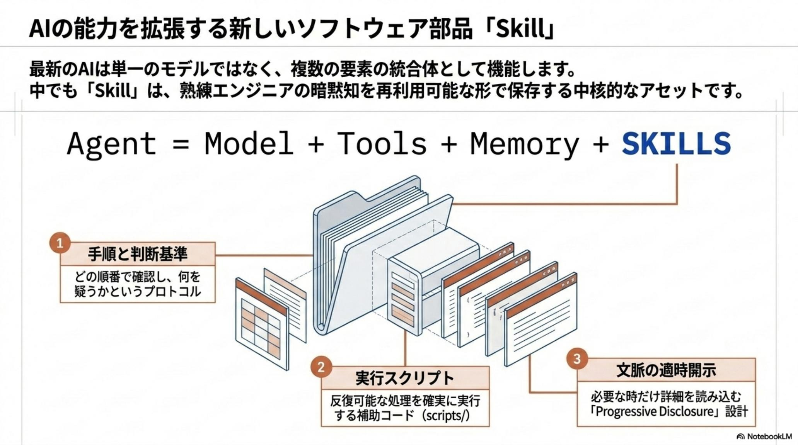
Skill の本質は 「再利用可能な能力」だ。一度書けば、別のプロジェクトでも、別のエージェントでも同じ手順を呼び出せる。Write once, use everywhere。
そして Skill は 資産になる。使い込むほどに洗練され、チーム共有され、組織固有のノウハウが「コード」として蓄積されていく。モデルは借り物でも、スキル群はあなたのものだ。
この「部品」を、誰が・どこで供給するのか。答えが、次の 3 層アーキテクチャである。
自律を支える、
3 層のアーキテクチャ。
3 つの主要プロジェクトは、競合ではなく レイヤー構造として噛み合う。下から 標準ライブラリ（OS）、実戦スキル集（アプリ）、オーケストレーション（司令塔）。下層が上層を支え、上に行くほど「作業員」から「マネージャー」へと役割が上がる。
大規模タスクを分割・統制する
複雑なタスクを Work Packet に分割し、承認ゲートを挟みつつ複数のサブエージェントを指揮する オーケストレーション層。Codex を「マネージャー」に変える最上位レイヤー。
「考える」から「行動する」相棒へ
Slack・Jira・Notion など外部サービスと連携する 行動特化のスキル集。業務自動化のハブとなり、セキュリティと権限制御も担う。コミュニティ主導で拡張。
AI エージェントの「標準ライブラリ」
OpenAI が公式に管理する スキルの「公式カタログ」。$ skill-installer でインストールし、書き方やインストール基準を定める OS の役割を果たす。
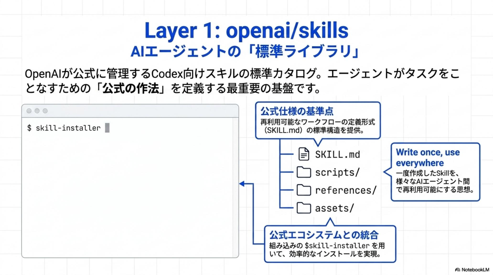
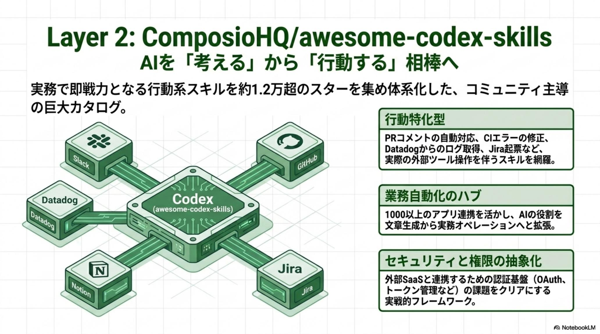
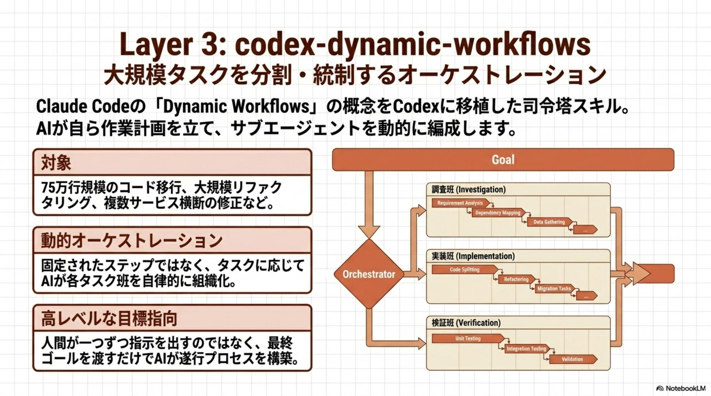
公式カタログか、
コミュニティ拡張か。
Layer 1（公式）と Layer 2（コミュニティ）は どちらかを選ぶものではなく、役割で使い分ける。信頼性を最優先する基盤は公式から、最新の行動スキルはコミュニティから——両者を組み合わせて初めて、実戦的な AI チームが組める。
| 評価軸 | openai/skills公式基盤 · OS | awesome-codex-skills実戦カタログ · App |
|---|---|---|
| 位置づけ | Codex Skills の標準基盤（OS 的存在） | 実戦投入される行動スキルのアプリ層 |
| 信頼性 | 公式管理で高い安定性と後方互換 | コミュニティ主導で最新・多様、品質は要選別 |
| 拡張性 | 標準仕様に準拠、堅実な拡張 | 1,200+ スキルと外部 SaaS 連携で広範 |
| セキュリティ | 公式基準による厳格な検証 | 権限制御を内蔵、導入前のレビュー必須 |
| 導入の容易性 | 標準インストーラで低摩擦 | 用途特化で即戦力、選定の目利きが鍵 |
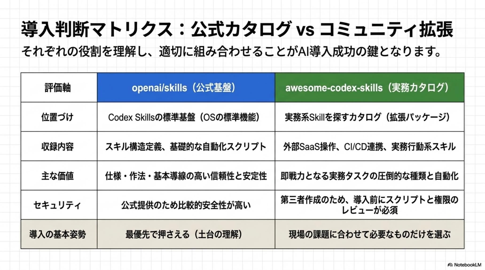
司令塔は、こう動く。
Layer 3 の dynamic-workflows は、大規模タスクを 5 つのステップで処理する。鍵は 中間成果をコンテキストではなく外部で管理すること——だから数日にわたる長時間実行や、並列レビューが破綻しない。
指揮と計画
ゴールを受け取り、達成までのタスクツリーと実行戦略を構築する。
Work Packet 分割
大タスクを独立した小単位に分解。各パケットを担当エージェントへ配分。
並列レビュー
実装と検証を別エージェントで並走。相互チェックで品質を担保する。
統合
各パケットの成果を束ね、整合性を解決して 1 つの結果へまとめる。
成果物
承認を経た最終成果を出力。実行ログは次の改善資産として残る。
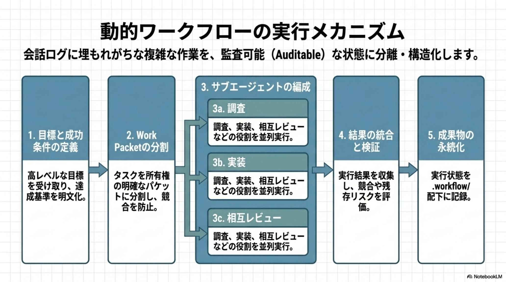
95% は AI に。
残り 5% が、すべてを守る。
完全自律は危険を伴う。だから 「監督付き自律（Supervised Autonomy）」では、AI が 95% を自走しつつ、データベース書き込みなど不可逆な操作の直前に 承認ゲートを置く。人間が担うのは 5%——だが、その 5% がリスクを封じる。
DB 書き込み・外部送信など不可逆操作の直前に承認を要求。暴走を構造的に止める。
AI が探索・実装・検証を自走し、人間は意思決定の要所のみに集中する。
承認ログが監査証跡になり、確実なリスク管理とエンタープライズ適合を実現。
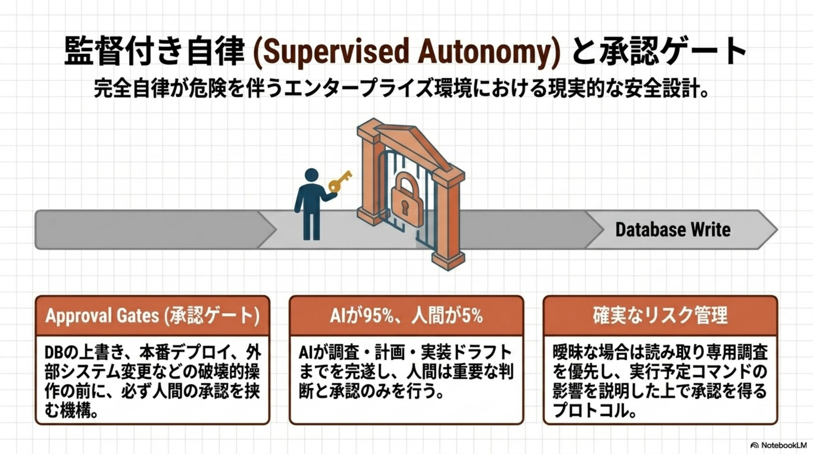
成果物が、次の資産になる。
1 回の作業を使い捨てにしない。生成された設計・手順・検証結果を CLAUDE.md などに蓄積し、次の作業の土台にする——これが Compound Engineering（技術的複利）。Plan → Work → Review → Compound のループが、組織の知識を雪だるま式に増やす。
従来の開発は、知識が個人の頭の中に留まり、プロジェクトが終われば霧散した。Compound Engineering は、その知識を 「コード化された資産」として残す。
スキル・ルール・文脈が積み上がるほど、AI チームは賢く・速くなる。「技術的負債」の逆——使うほど価値が増える 「技術的複利」が働きはじめる。
そして、この複利こそが、次節で語る 競争優位の源泉になる。
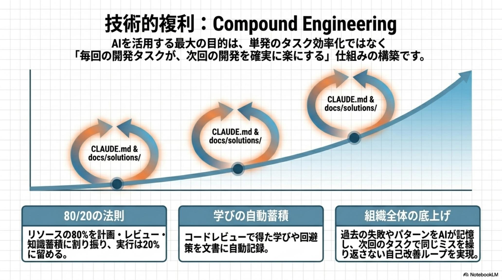
実務導入の、4 ステップ。
いきなり司令塔を組む必要はない。下層から順に積み上げる。公式基盤で土台を固め、実戦スキルで行動範囲を広げ、動的統制で大規模化し、最後にチームとして編成する。
公式基盤を導入
標準カタログから低リスクなスキルを入れ、土台と作法を固める。
実戦投入
業務に直結する行動スキルを選定。Slack / Jira 連携で即戦力化。
動的統制
承認ゲート付きで大規模タスクを分割・並列化し、規模を上げる。
チーム編成
役割を固定した AI チームを常設し、Compound で資産を育てる。
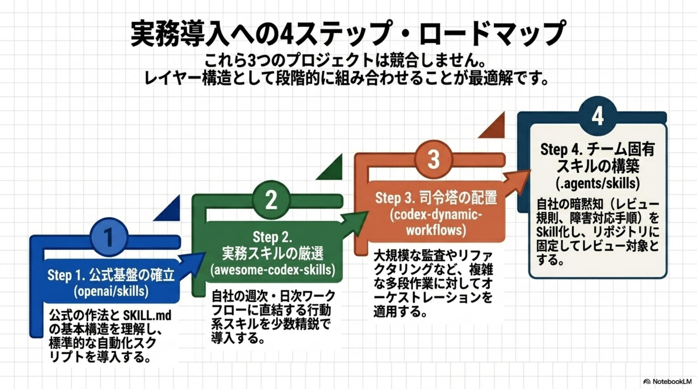
「どの AI を使うか」より、— Codex Agent Revolution · Skills are the Asset · 2026·06·01
「どんなスキル群を育てているか」。
モデルは借り物。
スキルは、資産。
2026 年以降、競争優位の源泉は 「どの AI を使うか」から 「どんなスキル群（チーム）を育てているか」へ移る。誰もが同じフロンティアモデルを使える時代、差を生むのは 蓄積された独自スキル資産だ。
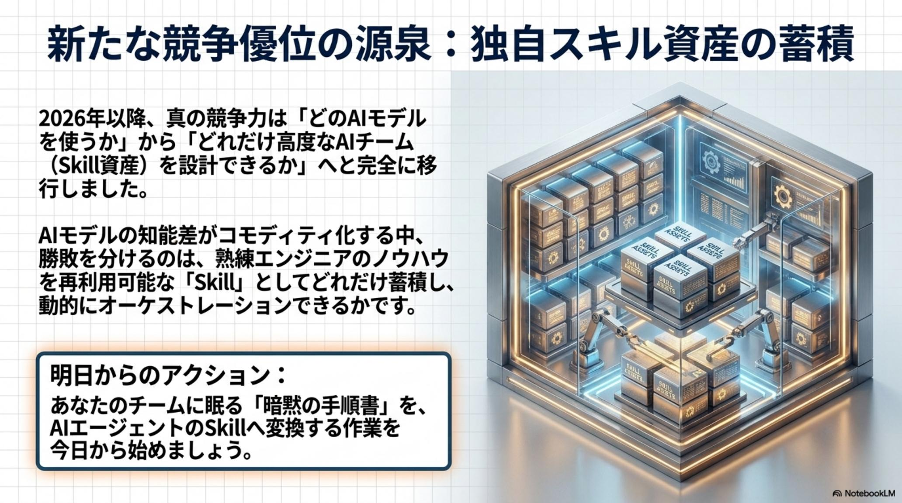
フロンティアモデルは数週間で塗り替わる。今日の最強は来月には標準になる。モデルに賭けるのは、砂上の楼閣だ。
一方、openai/skills で土台を固め、awesome-codex-skills で行動範囲を広げ、dynamic-workflows で統制し、Compound で蓄積したスキル群は——使うほど深まり、組織に固着する。
始め方はシンプルだ。公式基盤の小さな 1 スキルから。作業員に命令する側から、AI チームを 設計し、率いる側へ。その移行を、今日から始められる。